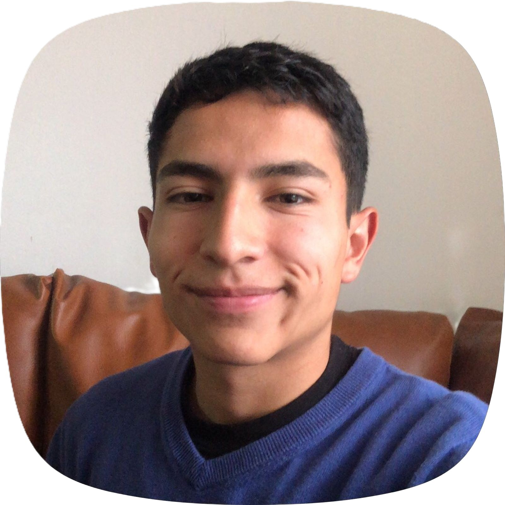
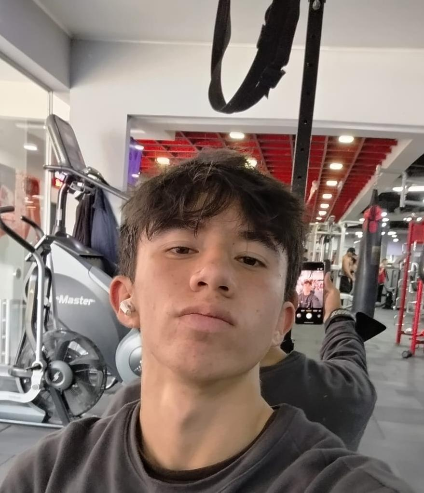
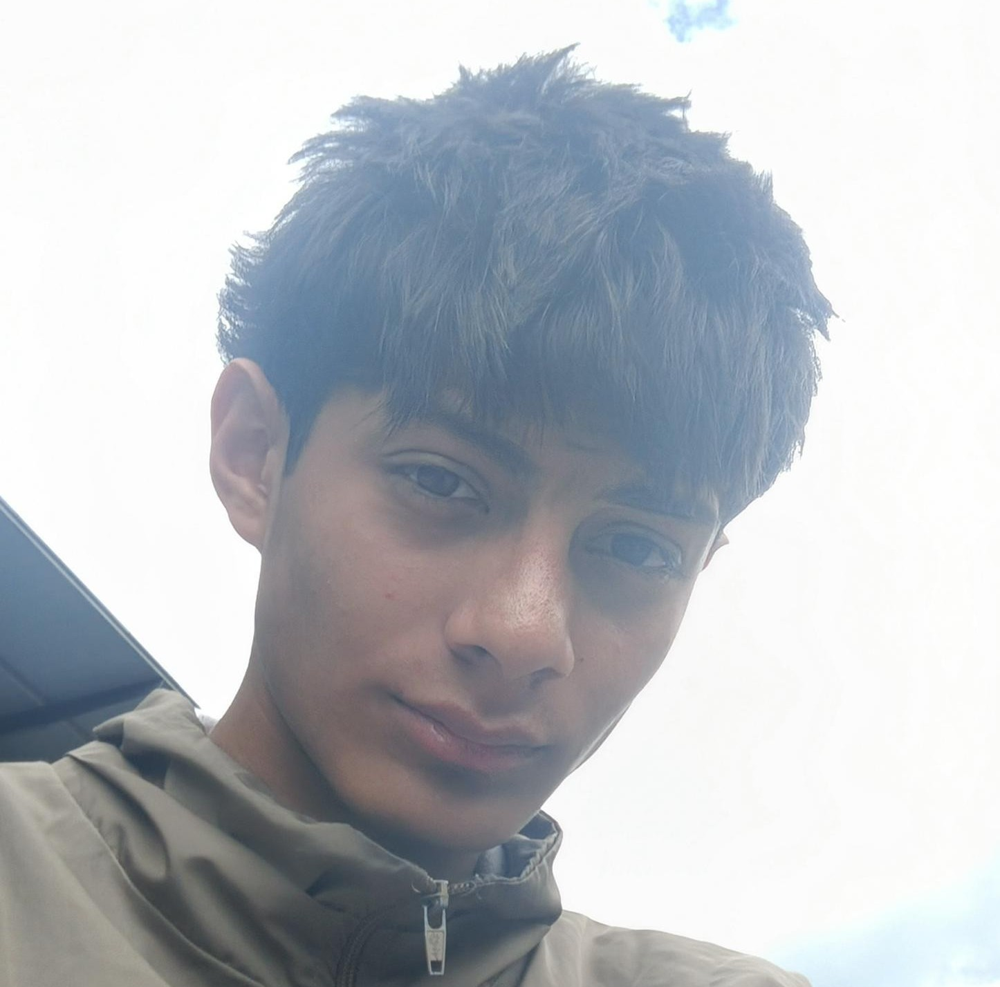
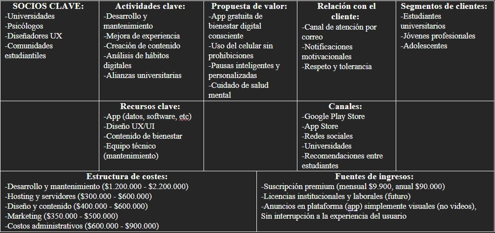

Juan José Mican
Nuestra empresa
El Proyecto de Bienestar Digital PAUSE es una propuesta de aplicación móvil que busca mejorar la relación que tienen los jóvenes con el uso del celular, el cual tiene un problema bastante evidente en el día a día: los jóvenes mayores de 15 años han desarrollado una dependencia muy fuerte al dispositivo móvil que les resulta casi imposible estar sin él más de 30 minutos, incluso cuando están haciendo algo que requiere concentración o es importante, esto no es solo una percepción, sino que está respaldado por estudios de 2026 que muestran que adolescentes revisan el celular más de 60 veces durante la jornada escolar, y que más de un tercio de los universitarios encuestados presentaba algún grado de adicción al smartphone, lo cual se traduce directamente en menor rendimiento académico y dificultades para concentrarse.
Lo interesante de PAUSE es que no propone solucionar esto con bloqueos ni restricciones impuestas desde afuera, sino entrenando gradualmente al propio usuario para que tome decisiones más conscientes sobre cuándo y cómo usa el celular, además de eso la app incluye pausas activas con actividades físicas, notificaciones motivacionales y sugerencias para aprovechar mejor el tiempo libre, con eso para hacerlo funcionar, el proyecto combina ingeniería de sistemas, que se encarga del desarrollo técnico de la app y la página web, con inteligencia artificial, que permite analizar los hábitos digitales de cada usuario y personalizar la experiencia.
En cuanto al negocio, la aplicación sería gratuita pero tendría una versión premium con suscripción mensual o anual, además de anuncios visuales no intrusivos y, a futuro, posibles licencias con instituciones. Los costos de operación se estiman entre $2.850.000 y $4.800.000 COP, finalmente el proyecto ya tiene un prototipo interactivo en Marvel App.
-Solución Propuesta-
Se propone como solución para este problema, la creación de una app, que vaya guiando a la persona a dejar el uso de su celular sin la necesidad de imponérselo bloqueando todas sus redes o su tiempo en pantalla, si no que sea una decisión propia del subconsciente de la persona ya entrenado con la app. Además de incluir beneficios físicos, como recordatorios con actividades físicas (pausas activas) y recomendaciones como en qué invertir el tiempo de una manera eficiente, en cambio de “perder el tiempo”.
¿Qué es "Pause!"?
Esta aplicación nace como el aliado estratégico para universitarios y usuarios que buscan dominar su día a día en un entorno digital cada vez más saturado. Su propósito es simplificar la vida académica y personal, ofreciendo un espacio intuitivo donde el usuario puede centralizar sus proyectos, organizar sus metas y colaborar con otros de forma fluida. Al eliminar el caos de tener la información dispersa en múltiples plataformas, la herramienta permite que cada persona recupere el control de su tiempo y se enfoque en lo que realmente importa: aprender, crear y cumplir sus objetivos con menos estrés.
A medida que el usuario crece, la solución crece con él, ofreciendo una estructura flexible que se adapta tanto a un trabajo de grado como a la gestión de proyectos profesionales. Es una herramienta diseñada para potenciar el talento individual a través del orden y la claridad, facilitando la transición entre la vida estudiantil y el mundo laboral. En definitiva, buscamos empoderar a las personas para que alcancen su máximo potencial mediante una tecnología sencilla, potente y pensada para los retos actuales de organización y productividad.
Nuestro equipo
(Integrantes del proyecto)

David Barrero

Juan David Jiménez
David Lucas

Jean Pierre Lozano
- Juan José Mican: Ingeniero de Sistemas
- David Barrero: Ingeniero de Sistemas
- Juan David Jiménez: Ingeniero de Inteligencia Artificial
- David Lucas: Ingeniero de Sistemas
- Jean Pierre Lozano: Ingeniero de Sistemas
-Enfoque Interdisciplinario-
En ingeniería de sistemas, la solución se aborda con la creación y modelación de la app, teniendo un enfoque en notificaciones y reconocimiento de uso del celular correctamente. Además de la creación de la página web sobre el proyecto. En ingeniería de inteligencia artificial, se enfoca en la creación de un análisis de hábitos de cada usuario para que la app cumpla su objetivo de forma correcta.
-Modelo Canvas-
